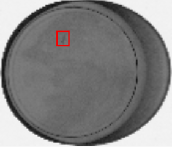
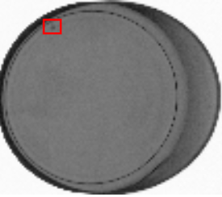
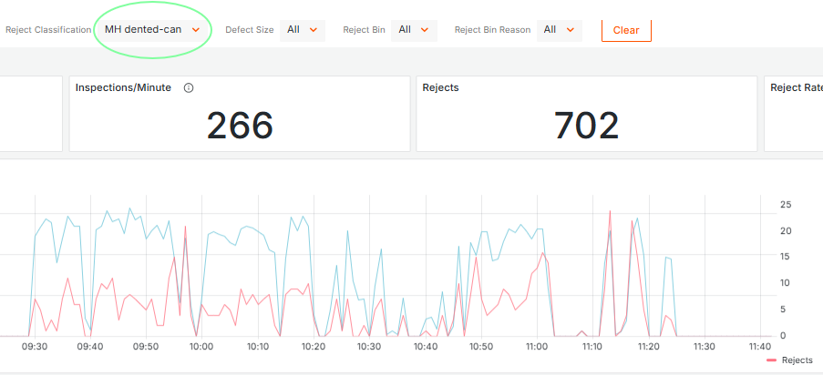
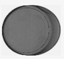

Case study
Advanced dent detection for canned tuna.
An anonymized seafood and packaged-goods application where GreyscaleAI separated dent events from foreign material events and made dent trends visible in Insights.
1,400 cans/min
One of the most demanding X-ray inspection environments in food manufacturing.
1 mm bones
Source material reports 1 mm fish bone detection in aluminum cans at 240 fpm.
Dented cans
A dedicated quality metric instead of a blended reject bucket.
-
Challenge
Conventional systems relied on rigid templates that caught only obvious defects and often grouped dents and foreign material into one reject category, leaving quality teams without clean trend visibility. -
Solution
GreyscaleAI trained dent-detection models on real production imagery to identify sidewall deformation while high-resolution dual-energy imaging continued to support foreign material inspection. -
Outcome
Dent events could be separated from foreign material events. Quality supervisors could monitor "Dented Cans" as a dedicated metric in the Cloud Insights Dashboard and trend it across shifts, products, and lines. -
Why it matters
QA and operations leaders get better defect classification, cleaner reporting, and faster decisions about whether the issue is package quality, product behavior, or true foreign material risk.




Related pages